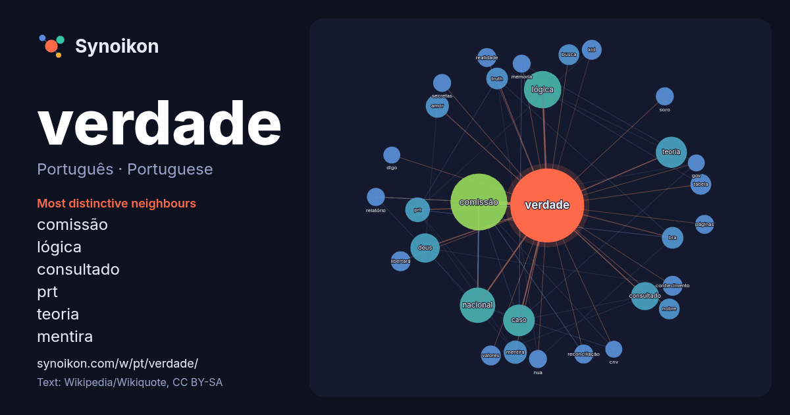

Português · Portuguese · popular word
verdade
“truth” · The words found around it in 1221 instances from Portuguese Wikipedia, Wikiquote.

Most distinctive neighbours
- comissão 59×
- lógica 34×
- consultado 23×
- prt 18×
- teoria 15×
- mentira 15×
- truth 14×
- bra 14×
- libertará 12×
- kid 11×
- reconciliação 11×
- amor 10×
- tabela 10×
- caso 10×
- memoria 9.9×
- nobre 9.9×
- deus 9.9×
- soro 9.8×
- nua 9.8×
- secretas 9.7×
× = how many times more often than in general Portuguese Wikipedia text.
Most frequent neighbours
- comissão 90
- lógica 39
- nacional 35
- caso 28
- teoria 27
- deus 24
- filme 24
- consultado 22
- brasil 20
- prt 17
- amor 15
- mentira 15
- bra 13
- truth 13
- brasileira 12
- busca 12
- fontes 12
- nobre 12
- tabela 12
- álbum 11
In context
- outros significados, veja Verdade (desambiguação). A verdade é a propriedade de estar de acordo com o fato ou a realidade. A verdade é geralmente considerada Wikipedia snippets · Verdade
- Comissão Nacional da Verdade (CNV), abreviadamente Comissão da Verdade, foi um colegiado instituído pelo Estado brasileiro para investigar as graves violações Wikipedia snippets · Comissão Nacional da Verdade
- da Verdade é uma banda brasileira de música cristã contemporânea, fundada em 1978. O grupo é parte da instituição religiosa Ministério Voz da Verdade. É Wikipedia snippets · Voz da Verdade
- Tema XAVIER, Nilson. «Caso Verdade». Teledramaturgia. Consultado em 2 de fevereiro de 2015 BERGAMO, Andrea. «Caso Verdade». Projeto Autobahn. Consultado Wikipedia snippets · Caso Verdade
- Teorias da verdade são teorias que fornecem uma definição de verdade para uma linguagem. controvérsia as teorias da verdade tem recentemente sido colocada Wikipedia snippets · Teorias da verdade
- Tabela-verdade, tabela de verdade ou tabela veritativa é um tipo de tabela matemática usada em lógica para determinar se uma fórmula é válida ou se um Wikipedia snippets · Tabela-verdade
- Médicos pela Verdade (em castelhano: Médicos por la Verdad) são um grupo negacionista da COVID-19 espanhol. O grupo apresentou-se oficialmente em Madrid Wikipedia snippets · Médicos pela Verdade
- Valor de verdade. Verdade lógica é um dos conceitos mais fundamentais na lógica. Existem diferentes teorias sobre sua natureza. Uma verdade lógica é uma Wikipedia snippets · Verdade lógica
More Portuguese words
- arte
- ciência
- clima
- comida
- coração
- cão
- deus
- dinheiro
- família
- força
- gato
- história
- língua
- morte
- natureza
- ouro
- ponte
- saúde
- trabalho
- trem
- vida
- água
Precomputed on 2026-10-09 with default settings (±5 words, medium corpus). The interactive map can refresh it with live data.